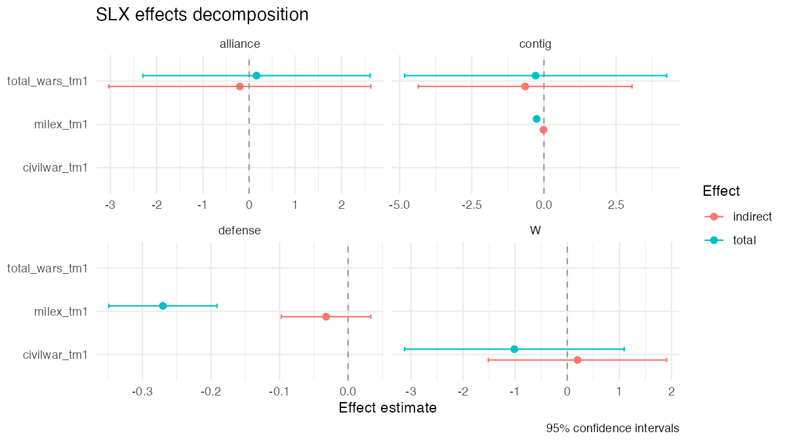

Documentation: https://cwimpy.github.io/slxr/
Spatial-X (SLX) models for applied researchers.
slxr makes it easy to fit, interpret, and visualize Spatial-X regression models in R. Unlike existing tools that treat SLX as a consolation prize for SAR, slxr centers the SLX approach and provides first-class support for the features applied researchers actually need:
- Formula-based interface — write
slx(y ~ x1 + x2, data, W, lag = "x1")and get a fitted model, not a wrestling match withlistwobjects. -
Variable-specific weights matrices — the defining feature of Wimpy, Whitten, and Williams (2021). Different covariates can spill over through different
Wmatrices (contiguity, alliance, trade, etc.) in a single model. - Higher-order spatial lags (
W,W²,W³) with clean effects decomposition. - Temporally-lagged spatial variables (TSLS) for panel data.
- Tidy direct, indirect, and total effects — for SLX these don’t require matrix inversion or simulation.
-
modelsummary-compatible output (viatidy()andglance()methods). - Sensible defaults plus diagnostics for comparing
Wspecifications.
Installation
# Development version
# install.packages("remotes")
remotes::install_github("cwimpy/slxr")Example
library(slxr)
data(defense_burden) # 1995 cross-section from Wimpy et al. (2021)
W_contig <- slx_weights(style = "custom", matrix = defense_burden$W_contig,
row_standardize = FALSE)
W_alliance <- slx_weights(style = "custom", matrix = defense_burden$W_alliance,
row_standardize = FALSE)
W_defense <- slx_weights(style = "custom", matrix = defense_burden$W_defense,
row_standardize = FALSE)
fit <- slx(
ch_milex ~ milex_tm1 + log_pop_tm1 + civilwar_tm1 + total_wars_tm1 +
alliance_us + ch_milex_us + ch_milex_ussr,
data = defense_burden$data,
spatial = list(
civilwar_tm1 = W_contig,
total_wars_tm1 = list(contig = W_contig, alliance = W_alliance),
milex_tm1 = list(contig = W_contig, defense = W_defense)
)
)
slx_effects(fit)
slx_plot_effects(fit, types = c("indirect", "total"))
Variable-specific weights matrices:
Status
Early development. The MVP covers single-W SLX estimation, effects decomposition, and modelsummary integration. Multi-W, higher-order, temporal, and plotting features are on the roadmap.
Citation
If you use slxr in published work, please cite both the package and the methodological paper it implements. Run citation("slxr") in R to see the current BibTeX entry, or refer to:
- Wimpy, C., Whitten, G. D., & Williams, L. K. (2021). X Marks the Spot: Unlocking the Treasure of Spatial-X Models. Journal of Politics, 83(2), 722–739. doi:10.1086/710089
- Wimpy, C. (2026). slxr: Spatial-X (SLX) Models for Applied Researchers. R package version 0.1.0. https://cwimpy.github.io/slxr/
References
Wimpy, C., Whitten, G. D., & Williams, L. K. (2021). X Marks the Spot: Unlocking the Treasure of Spatial-X Models. Journal of Politics, 83(2), 722–739. doi:10.1086/710089
Vega, S. H., & Elhorst, J. P. (2015). The SLX Model. Journal of Regional Science, 55(3), 339–363.
LeSage, J. P., & Pace, R. K. (2009). Introduction to Spatial Econometrics. Chapman & Hall/CRC.